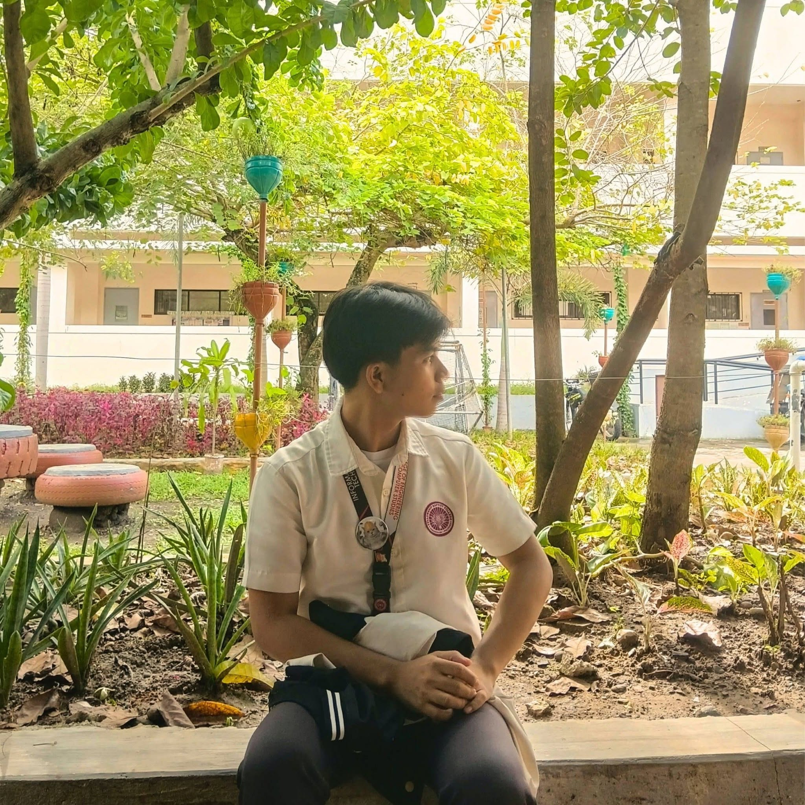

Web Development
Building website layouts and interfaces using HTML, CSS, and JavaScript.
WELCOME TO MY PORTFOLIO
An aspiring IT professional passionate about web development, database management, programming, and creative digital solutions.

GET TO KNOW ME
I'm an Information Technology student passionate about web development, database management, programming, and creative digital projects. I enjoy exploring new technologies, developing practical solutions, and creating user-friendly websites and applications.
I am continuously improving my technical skills and expanding my knowledge in the IT field. Through academic projects and personal experiments, I aim to strengthen my problem-solving abilities and gain experience in building useful digital solutions.
My goal is to become a skilled IT professional who combines technology and creativity to build meaningful and innovative projects.
WHAT I AM LEARNING
Technologies and areas I explore through my studies and personal projects.
Building website layouts and interfaces using HTML, CSS, and JavaScript.
Practicing programming fundamentals, logical thinking, and problem-solving.
Working with SQL, database design, relationships, and CRUD operations.
Organizing project files, managing code versions, and publishing static websites.
Exploring layouts, typography, colors, responsive design, and user experience.
Learning IP addressing, subnetting, network devices, and network fundamentals.
MY WORK
A selection of academic and personal projects related to information technology.
A personal website showcasing my background, technical interests, skills, and projects. Built with HTML and CSS for GitHub Pages.
View Source Code →A database project focused on organizing member records, balances, ministry assignments, and CRUD operations.
Academic ProjectAn AI-assisted clinic records and medical certificate system concept designed to support digital records and clinic workflows.
Academic ProjectLET'S CONNECT
I'm interested in learning, collaborating, and exploring opportunities to grow in the field of information technology.